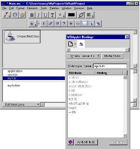

Table of Contents
Table of Contents  Next Section
Table of Contents
Next Section
Table of Contents  Previous Section
Previous Section
This creates a WOApplet, whose bindings you must set.

You are asked whether you want to add the .class file to your project. If you reply Yes, it is added to the Web Server Resources suitcase. A WOApplet appears in your component, with its code attribute set to the name of the file.
Table of Contents Next Section